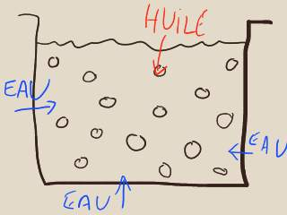
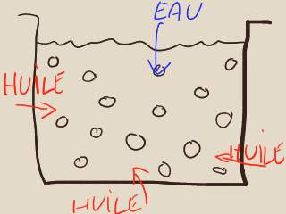

|
Les
liants émulsions
C'est la substance enrobante qui mène le jeu, voila la règle : "(...) plus
la quantité de liant enrobant sera importante, plus les gouttelettes de liquide
enrobé seront éloignées les unes des autres (...)" (réf. Pierre
Garcia, p. 79). L'enrobant, son type, son abondance, déterminent en effet
l'aspect général et le comportement de la peinture.
Émulsions maigres

L'émulsion maigre se comporte à peu près comme un liant aqueux. On la
travaille à l'eau de A à Z (dilution, séchage, nettoyage du matériel).
La présence d'huile permet certains types de travaux en transparence
inaccessibles à la peinture 100% aqueuse.
Il faut cependant prendre garde à la réversibilité partielle
de certaines émulsions maigres : les couches
n'acquièrent pas forcément l'autonomie permise par les émulsions grasses.
Au point de vue physique, les molécules d'eau se combinent à
l'air ambiant, autorisant les molécules oléagineuses à s'organiser en
macromolécules très stables autour du pigment. Ceci n'est qu'une vérité statistique : les
éléments du liant aqueux ne disparaissent pas pour autant. S'ils sont
réversibles, ils demeurent des
réceptacles pour l'eau.
Les émulsions maigres ne donneraient selon certains auteurs que des films aux
qualités mécaniques modérées ou faibles. Elles pourraient craqueler dès le
séchage. Cependant, les peintures alkydes, utilisées avec des adjuvants comme
le Liquin ®, se situant pourtant bien dans la catégorie des émulsions maigres,
n'ont pas ce défaut semble-t-il (merci de nous
faire parvenir tout complément d'information à ce sujet).
l'oeuf est naturellement une émulsion maigre (lire l'article
sur l'oeuf et la tempera).
Émulsions grasses

Elles ont une viscosité très intéressante par rapport au travail habituel
à l'huile, autorisant de forts empâtements et diminuant légèrement le risque de coulure.
Au séchage, les molécules d'eau sont progressivement chassées par l'huile
encore fraîche, liquide.
Les vides laissés sont comblés progressivement. Il y a un retrait, d'autant
plus modéré que l'émulsion est grasse.
L'épaisseur sera d'autant plus importante que le liant enrobé (et non l'eau
seule) sera
proportionnellement plus présent.
La laque japonaise KI-URUSHI est une
émulsion grasse naturelle.
Les
produits
Les
émulsions et l'huile : problématique du gras sur maigre
Lire préalablement l'article Gras
sur maigre.
Les peintures et médiums alkydes, l'oeuf et le liant
méthylcellulosique peuvent être employées en peinture à l'huile.
Une émulsion adjointe à une huile, n'est pas plus maigre
simplement parce qu'elle contient plus d'eau !
En
effet, celle-ci s'évapore en bonne partie assez rapidement (sauf empâtement
trop épais). Par contre, si vous augmentez la proportion de liant aqueux, vous
rendez effectivement la pâte plus maigre.
Par ailleurs, une citation de Pierre Garcia (Le métier du
peintre, chez Dessain & Tolra) nous a semblé intéressante :
"Pour tout dire, les émulsions ont un comportement
assez facétieux : il n'est pas rare en voulant réaliser une émulsion maigre
d'obtenir une émulsion grasse (ou vice versa)." Cette remarque vaut
surtout pour l'oeuf et les produits dont le peintre ne connaît pas bien la
composition (produits "à base de" ceci ou cela).
Émulsion huile/liant à
l'oeuf
En lui-même, le jaune d'oeuf est une
émulsion plutôt maigre : 30% d'huile d'oeuf, dite lécithine.
Ses particularités sont la finesse et un satiné très particulier. L'oeuf se prête assez bien aux enductions
crayeuses classiques (voir gesso). Dans le passé, il a
d'ailleurs joué un rôle important en tant que liant
a tempera (icônes, etc.).
Noter que le temps de séchage de l'oeuf et des produits à l'oeuf (sauf
émulsions vraiment grasses) est plutôt
court.
Le jaune d'oeuf peut être directement combiné à l'huile de lin ou une autre huile de
cette manière-ci par exemple (recette
en grande partie empruntée à Pierre Garcia) :
*
un jaune d'oeuf vidé, sans sa membrane
*
le même volume d'eau distillée
*
la même quantité (eau + jaune) d'huile introduite très progressivement
en battant le mélange au fouet
*
un conservateur (pas forcément le vinaigre - voir
Éléments
pour recettes dans l'article sur l'oeuf).
ce qui produit en théorie une émulsion maigre (en théorie car tous les
oeufs n'ont pas précisément la même composition). Pour adapter la recette à
vos besoins, lire la liste
d'éléments pour recettes dans l'article sur l'oeuf et la tempera. Un site
consacré à la tempera à l'oeuf a également retenu notre attention :
eggtempera.free.fr/fr.
Quitte à surprendre, notons qu'une mayonnaise est une émulsion à
l'oeuf avec laquelle il est possible de
peindre. Lire texte in L'oeuf.
KI-URUSHI/sumac
C'est une émulsion naturelle utilisée depuis la nuit des temps. La
première laque, dit-on.
Elle n'est autre que la sève d'un arbre (URUSHI en japonais, sumac
en persan et en français).
Elle donne lieu en Asie à de nombreux procédés de laques continentales ou
japonaises.
Lire absolument l'article consacré à
La
laque japonaise.
Émulsion
huile/liant méthylcellulosique
Le liant méthylcellulosique n'est pas en lui-même une émulsion mais il
autorise les émulsions (lire l'article
sur ce produit).
L'Alcasit ®, le Glutolin ® et les produits similaires ont un côté blanchâtre un peu désagréable, qui s'estompe en
partie au séchage. Cependant, la plupart des produits destiné à favoriser l'empâtement
ont ce type de défauts (colorations intempestives).
Leur siccativité surprend, leur retrait aussi.
Proportions : elles sont laissées à discrétion du peintre, mais par
exemple, 67% d'alcasit pour 33% d'huile est une proportion déjà importante pour
fabriquer un liant
(par opposition avec un médium - lire l'article sur la fabrication
du médium huile/méthylcellulose).
La
cire saponifiée
Lire texte in Les cires, l'encaustique.
Les alkydes
Lire la page consacrée à ces peintures.
Emulsions
à la caséine
Il est possible
- mais pas très simple - de fabriquer une émulsion caséine/huile.
L'huile étant un ester et la
caséine une base, il faut s'attendre à ce qu'une réaction se produise (voir Saponification)
et donc utiliser de très faibles proportions de caséine
ou essayer de neutraliser sa charge.
La réalisation de ce type
de produits combinés requiert de nombreux contrôles et une mise au point
précise.
Plus simple en apparence à cause de la relative
facilité de préparation des produits, une émulsion réalisée avec
* une caséine
soluble diluée normalement dans l'eau
* une cire
blanche mise sous la forme d'une encaustique
s'avère en réalité parfois ardue à effectuer
correctement ! Verser la caséine dans l'encaustique à froid provoque
l'apparition de sortes de grumeaux irréductibles. Il en va de même si l'on
plonge la caséine froide dans l'encaustique chaude. Il faut donc réchauffer la
caséine ou l'émulsion, ce qui ne va pas sans problèmes car une véritable
cuisson modifierait la structure moléculaire des protéines de la caséine.
De plus, nous avons constaté que cette dernière est fort discrète une fois le travail séché (on constate juste une sorte de
léger épaississement de la pâte). Il faut donc une proportion de cire assez
faible.
Émulsions
à la chaux
Lire Utilisation
en peinture à l'huile in La chaux.
Émulsion-enduit au savon
noir
Cet enduit est surtout destiné à des surfaces non lisses.
Il est utilisé en décoration.
Une recette typique :
*
10 grammes de colle,
10 grammes d'huile de lin, 100 grammes d'eau, 1 ou 2 grammes de
savon
noir "pour émulsionner l'huile" (dit-on).
* du pigment (blanc ou autre)
* remuer
vigoureusement.
Il pourrait également
être employé comme liant à peindre. Merci de nous
communiquer toute information quant à l'emploi de l'émulsion au savon noir
comme liant. Nous émettons cependant quelques réserves : certains liants saponifiés donnent d'excellents résultats,
d'autres, mal préparés (ingrédients ou dosages ne convenant pas) ou mal
conçus, peuvent donner des résultats instables.
Émulsion
à la gélatine
La gélatine en question peut
être une colle de peau ou d'os
(proportions à peu près similaires), de poisson
ou autre (quantités à ajuster) - voir gélatines.
Proportions approximatives :
*
20 parts
de colle de peau ou d'os diluée (compter très environ 7 grammes
par décilitre d'eau)
* 2 parts
d'huile éventuellement mêlée de
standolie.
Cette proportion d'huile peut être doublée, ou davantage, pour réaliser une
émulsion
grasse. Son rôle, on s'en doute, est solidifiant et
assouplissant, sans parler de ses vertus picturales.
* "un
peu" d'eau.
* une
part de
carbonate d'ammonium,
destinée à faciliter le mélange intime, l'émulsion huile /
colle aqueuse par saponification de l'huile.
Cette opération essentielle peut induire une charge électrochimique
déséquilibrée. Il est prudent de tester le pH de la
pâte obtenue.
L'huile doit être incorporée
très progressivement dès que la colle bouillonne. Le carbonate d'ammonium doit
être introduit quasiment "au goutte-à-goutte" pendant cette étape.
L'application doit être
réalisée à chaud sur une surface encollée non grasse.
Cette émulsion est surtout
utilisée en peinture décorative. Nous ne l'avons pas encore testée.
Encres
"lino"
Ce sont des émulsions de
composition souvent mystérieuse qui sont utilisées pour la
linogravure, mais
aussi pour le monotype.
Les meilleurs résultats
seraient obtenus avec les encres lino les plus grasses. Le diluant de ces encres est
généralement une essence.
Adjuvants
facilitant l'émulsion
Comme on a pu le remarquer dans
les différentes recettes de cet article, le carbonate d'ammonium permet la
formation d'émulsions. Lire l'article consacré à
ce produit.
Le camphre
pourrait aussi jouer un rôle, mais nous avouons ignorer pour l'instant lequel
précisément.
Retour
début de page
|